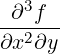
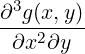
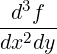
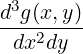
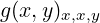
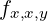
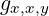

7.7 DF Operator
The operator df is used to represent partial differentiation with respect to one or more
variables. It is used with the syntax:
df(⟨exprn:algebraic⟩[, ⟨var:kernel⟩<, ⟨num:integer⟩>]) : algebraic.
The first argument is the expression to be differentiated. The remaining arguments
specify the differentiation variables and the number of times they are applied.
The number num may be omitted if it is 1. For example,
| df(y,x) | = ∂y∕∂x |
| df(y,x,2) | = ∂2y∕∂x2 |
| df(y,x1,2,x2,x3,2) | = ∂5y∕∂x12∂x2∂x32. |
The evaluation of df(y,x) proceeds as follows: first, the values of y and x are found.
Let us assume that x has no assigned value, so its value is x. Each term or other part of
the value of y that contains the variable x is differentiated by the standard rules. If z is
another variable, not x itself, then its derivative with respect to x is taken to be 0, unless
z has previously been declared to depend on x, in which case the derivative is reported
as the symbol df(z,x).
7.7.1 Switches influencing differentiation
Consider df(u,x,y,z), assuming u depends on each of x,y,z in some way. If none
of x,y,z is equal to u then the order of differentiation is commuted into a canonical
form, unless the switch nocommutedf is turned on (default is off). If at least one of
x,y,z is equal to u then the order of differentiation is not fully commuted and the
derivative is not simplified to zero, unless the switch commutedf is turned on. It is off
by default.
If commutedf is off and the switch simpnoncomdf is on then simplify as
follows:
df(u,x,u) -> df(u,x,2) / df(u,x)
df(u,x,n,u) -> df(u,x,n+1) / df(u,x)
provided u depends only on the one variable x. This simplification removes the
non-commutative aspect of the derivative.
If the switch expanddf is turned on then REDUCE uses the chain rule to expand
symbolic derivatives of indirectly dependent variables provided the result is
unambiguous, i.e. provided there is no direct dependence. It is off by default. Thus, for
example, given
depend f,u,v; depend {u,v},x;
on expanddf;
df(f,x) -> df(f,u)*df(u,x) + df(f,v)*df(v,x)
whereas after
depend f,x;
df(f,x) does not expand at all (since the result would be ambiguous and the
algorithm would loop).
Turning on the switch allowdfint allows “differentiation under the integral sign”,
i.e.
df(int(y, x), v) -> int(df(y, v), x)
if this results in a simplification. If the switch dfint is also turned on then this
happens regardless of whether the result simplifies. Both switches are off by
default.
7.7.2 Adding Differentiation Rules
The let statement can be used to introduce rules for differentiation of user-defined
operators. Its general form is
| for all ⟨var1⟩,…,⟨varn⟩ |
| let df(⟨operator⟩⟨varlist⟩,⟨vari⟩) = ⟨expression⟩ |
where
⟨varlist⟩ → (⟨var1⟩, …, ⟨varn⟩),
and ⟨var1⟩, …, ⟨varn⟩ are the dummy variable arguments of ⟨operator⟩.
An analogous form applies to infix operators.
Examples:
for all x let df(tan x,x) = 1 + tan(x)^2;
(This is how the tan differentiation rule appears in the REDUCE source.)
for all x,y let df(f(x,y),x)=2*f(x,y),
df(f(x,y),y)=x*f(x,y);
Notice that all dummy arguments of the relevant operator must be declared arbitrary by
the for all command, and that rules may be supplied for operators with any number
of arguments. If no differentiation rule appears for an argument in an operator, the
differentiation routines will return as result an expression in terms of df. For example, if
the rule for the differentiation with respect to the second argument of f is not supplied,
the evaluation of df(f(x,z),z) would leave this expression unchanged. (No
depend declaration is needed here, since f(x,z) obviously “depends on”
Z.)
Once such a rule has been defined for a given operator, any future differentiation rules for
that operator must be defined with the same number of arguments for that operator,
otherwise we get the error message
Incompatible DF rule argument length for <operator>
7.7.3 Options controlling display of derivatives
If the switch dfprint is turned on (it is off by default) then derivatives are displayed
using subscripts, as illustrated below. In graphical environments with typeset
mathematics enabled, the (shared) variable fancy_print_df can be set to
one of the values partial, total or indexed to control the display of
derivatives. The default value is partial. However, if the switch dfprint is on
then fancy_print_df is ignored. For example, with the following settings,
derivatives are displayed as follows (assuming depend f,x,y and operator
g):
| Setting | df(f,x,2,y) | df(g(x,y),x,2,y) |
| | | |
| fancy_print_df:=partial |  |  |
| fancy_print_df:=total |  |  |
| fancy_print_df:=indexed |  |  |
| on dfprint |  |  |